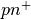

3.3. Tutorial 3: Two-dimensional pn junction with a grain boundary¶
In this tutorial we show how to build a two-dimensional  junction containing a grain boundary.
See also
The example treated here is in the file 2d_homojunction_withGB.py located in the
examples\tutorial3 directory in the root directory of the distribution. The same simulation’s GUI input file is 2d_homojunction_withGB.ini, also located in the examples\tutorial3 directory.
3.3.1. Building a two-dimensional system¶
We want to simulate a two-dimensional junction (homojunction) with a columnar grain boundary as depicted below.
As usual, we start by importing the sesame and numpy packages. We construct the
mesh of the system and make an instance of the Builder(). Notice that in this case we provide the Builder() function with both x and y grids; this automatically tells the code to build a two-dimensional system:
import sesame
import numpy as np
# dimensions of the system
Lx = 3e-4 # [cm]
Ly = 3e-4 # [cm]
# position of p-n junction [cm]
junction = .1e-4
# Mesh
x = np.concatenate((np.linspace(0, .2e-4, 30, endpoint=False), # mesh near the contact
np.linspace(0.2e-4, 1.4e-4, 50, endpoint=False), # mesh in depletion region
np.linspace(1.4e-4, 2.7e-4, 50, endpoint=False), # mesh in bulk
np.linspace(2.7e-4, 2.98e-4, 30, endpoint=False), # mesh near the GB end point
np.linspace(2.98e-4, Lx, 10))) # mesh near the contact
y = np.concatenate((np.linspace(0, 1.25e-4, 50, endpoint=False),
np.linspace(1.25e-4, 1.75e-4, 50, endpoint=False), # mesh near the GB core
np.linspace(1.75e-4, Ly, 50)))
# Create a system
sys = sesame.Builder(x, y)
We define and add a material as before:
# Dictionary with the material parameters
mat = {'Nc':8e17, 'Nv':1.8e19, 'Eg':1.5, 'affinity': 3.9, 'epsilon':9.4,
'mu_e':200, 'mu_h':200, 'tau_e':10e-9, 'tau_h':10e-9, 'Et':0}
# Add the material to the system
sys.add_material(mat)
We next define functions delimiting the regions with different doping values. Because the model is 2-dimensional, the function input argument pos is a tuple of the form (x,y). In the functions below, we first “unpack” the x and y coordinate, and determine the location of the x-coordinate relative to the junction:
# Add the donors
def n_region(pos):
x, y = pos
return x < junction
nD = 1e17 # [cm^-3]
sys.add_donor(nD, n_region)
# Add the acceptors
def p_region(pos):
x, y = pos
return x >= junction
nA = 1e15 # [cm^-3]
sys.add_acceptor(nA, p_region)
We specify contacts as before:
# Use perfectly selective Ohmic contacts
sys.contact_type('Ohmic', 'Ohmic')
Sn_left, Sp_left, Sn_right, Sp_right = 1e7, 0, 0, 1e7
sys.contacts(Sn_left, Sp_left, Sn_right, Sp_right)
Note
Sesame assumes that the contact properties (e.g. recombination velocity, metallic work function) are uniform along the y-direction.
3.3.2. Adding a grain boundary¶
Now we add a line of defects to simulate a grain boundary using the sys method add_line_defects(). The necessary inputs are the grain boundary defect’s electrical properties (e.g. capture cross sections, energy level, defect density, and charge states), and the endpoints defining the grain boundary location (recall a grain boundary is represented by a line in a 2-dimensional simulation). Below we show code defining these properties for our example, and adding the grain boundary to the simulation:
# gap state characteristics
rho_GB = 1e14 # defect density [1/cm^2]
S_GB = 1e-15 # trap capture cross section [cm^2]
E_GB = 0.4 # energy of gap state (eV) from intrinsic energy level
# Specify the two points that make the line containing additional charges
p1 = (.1e-4, 1.5e-4) # [cm]
p2 = (2.9e-4, 1.5e-4) # [cm]
# Add the line of defects to the system
sys.add_line_defects([p1, p2], rho_GB, S_GB, E=E_GB, transition=(1/-1))
The type of the charge transition is specified by assigning the transition input value as
shown above. In our example we chose a mixture of donor and acceptor at energy
E. An acceptor would be described by (-1,0) and a donor by (1,0).
Note
Avoid adding charges on the contacts of the system, as these will not be taken into account. The code is not equiped to deal with such boundary conditions.
In order to add another gap state at a different energy at the same location, one repeats the exact same process.
Here we assumed equal electron and hole surface recombination velocities. The function
add_line_defects()takes two surface recombination velocities as argument. The first is for electrons, the second for holes. To use different values writesys.add_line_defects([p1, p2], rho_GB, Sn_GB, Sp_GB, E=E_GB)
A continuum of states can be considered by omitting the energy argument above. The density of states can be a callable function or a numerical value, in which case the density of states is independent of the energy.
3.3.3. Computing the IV curve¶
The computation of the IV curve proceeds as in the previous tutorials. We show the code below:
# Solve equilibirum problem first
solution = sesame.solve_equilibrium(sys)
# define a function for generation profile
f = lambda x, y: 2.3e21*np.exp(-2.3e4*x)
# add generation to the system
sys.generation(f)
# Specify applied voltages
voltages = np.linspace(0, .9, 10)
# Compute IV curve
j = sesame.IVcurve(sys, voltages, solution, '2dGB_V')
# rescale to dimension-ful current
j = j * sesame.scaling.current
# Save the computed IV data
result = {'voltages':voltages, 'j':j}
np.save('2dGB_IV', result)
3.3.4. Plotting system variables¶
The 2-dimensional solutions can be plotted with tools we describe more fully in tutorial 4. As a preview, we list the commands for loading and plotting the electrostatic potential:
sys, results = sesame.load_sim('2dGB_V_0.gzip')
sesame.plot(sys, results['v'])
The output is shown below:

Note
As discussed more fully in Tutorial 4, quantities in Sesame are dimensionless by default. The electrostatic potential shown above is dimensionless, scaled by the thermal voltage. The scaling field of sys provides the relevant quantites needed to rescale quantities to dimension-ful form.
3.3.5. Spatial variation of material parameters¶
See also
The example treated here is in the file 2d_homojunction_withGB_nonuniform_mobility.py in the
examples\tutorial4 directory in the root directory of the distribution.
Suppose we want to have a reduced mobility around the line defects compared to the rest of the system. To do so, we add another material which is defined in the region of non-uniform mobility. It has the same properties as the original material, except that the mobility is not longer a scalar, but a function:
# function defining region of reduced mobility
xGB = 1.5e-4 # GB x-coordinate
Lmu = .25e-4 # distance from GB over which mobility is reduced
def reduced_mu_region(pos):
x, y = pos
return ((x < xGB+Lmu) & (x > xGB-Lmu) & (y > .1e-4) & (y < 2.9e-4))
# function defining region of reduced mobility
def my_mu(pos):
muGB = 10
x, y = pos
# mobility varies linearly between GB core and Lmu
return 10 + 310*np.abs((x-xGB)/Lmu)
mat2 = {'Nc': 8e17, 'Nv': 1.8e19, 'Eg': 1.5, 'epsilon': 9.4, 'Et': 0,
'mu_e': my_mu, 'mu_h': 40, 'tau_e': 10 * 1e-9, 'tau_h': 10 * 1e-9}
# Add the material to the system
sys.add_material(mat2, reduced_mu_region)
sesame.plot(sys, sys.mu_e)